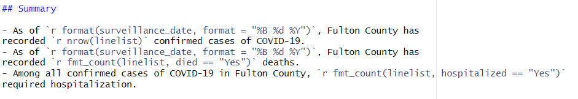

ebola_linelist %>%
filter(
age > 25,
district == "Bolo"
)2 Fulton (EN)
Overview
| Case study characteristics | |
|---|---|
| Name: | Fulton County |
| Language: | English |
| Tool: | R |
| Location: | United States |
| Scale: | Local |
| Diseases: | COVID-19 |
| Keywords: | COVID-19; SARS-COV-2; Outbreak |
| Technical complexity: | Intermediate |
| Methodological complexity: | Basic |
Authorship
Original authors: Alex Spina, Neale Batra, Mathilde Musset, Henry Laurenson-Schafer
Data source: Anonymised and jittered data provided by Fulton County for training purposes
Adapted by: Alberto Mateo Urdiales to the case study template
Instructions
Getting Help
There are several ways to get help:
- Look for the “hints” and solutions (see below)
- Post a question in Applied Epi Community with reference to this case study
Hints and Solutions
Here is what the “helpers” look like:
Click to read a hint
Here you will see a helpful hint!
Click to see a solution (try it yourself first!)
Here is more explanation about why the solution works.
Posting a question in the Community Forum
… description here about posting in Community…
Terms of Use
XXXXXXXXXXXXXXXXXXXXX
Feedback & suggestions
- You can write feedback and suggestions on this case study at the GitHub issues page
- Alternatively email us at: contact@appliedepi.org
Version 1.0
January 2024 update: By Alberto Mateo Urdiales to adapt it to the case study template
2.0.1 Version and revisions
The first version was written by Alex Spina, Neale Batra, Mathilde Musset, Henry Laurenson-Schafer in 20XX.
| Date | Changes made | Version | Author |
|---|---|---|---|
| Jan 2024 | Adapted to case study template | 1.1 | Alberto Mateo Urdiales |
Guidance
Background and Objectives of this case study
This is a an example R-markdown script which demonstrates how to create an automated outbreak situation report for COVID-19 in Fulton county, USA. The data used comes from an anonymised and fake (scrambled) linelist of COVID-19 cases in Fulton county from the beginning of the pandemic (early 2020) until July 2021.
The overall objective is to create an automatic and dynamic report that shows the COVID-19 epidemiological situation in Fulton County.
In this case study you will learn:
- How to import, clean and analyse your data.
- Carry out descrptive analysis by time, place and person.
- Use the above to create an automatic and dynamic report in word using Rmarkdown.
For the purpose of the case study we separate this by descriptive analysis and visualisation (normally this would be mixed together of course). The visualisation section is organised in to place, time and person. This is to simplify flow for didactic delivery.
Analysis is loosely based off the monthly epidemiology reports for Fulton county
Previous level of expertise assumed
Users should have some prior experience with R, including:
R basics: Several packages are required for different aspects of analysis with R. You will need to install these before starting. We install and load packages using the {pacman} package. Its p_load() command will install packages if necessary and load them for use in the current session. This might prove difficult if you have limited administrative rights for your computer. Making sure your IT-department gives you the correct access can save a lot of headache. See this handbook pages on the basics of installing packages and running R from network drives (company computers) for more detail. https://epirhandbook.com/r-basics.html#installation https://epirhandbook.com/r-on-network-drives.html#r-on-network-drives
R projects: See Chapter 6 R Projects from the EpiRhandbook
Import and export of data: See Chapter7 Import and export
Preparation for the case study
- Download folder fulton_en and extract contents in the local laptop
- Open the Rstudio project inside the folder called fulton_en.Rproj
- Subfolder data contains fulton COVID-19 data needed for the analysis
- Subfolder solution_materials has the Rmd document with the solution and the Word document with the output requested
- Open a new Rmarkdown file in RStudio and save it in the root folder fulton_en. If you have any doubts about how to create an Rmarkdown follow the EpiRhandbook instructors here
- This Rmarkdown file will be the file used throughout the case study and, rendering it will produce the weekly report in word format
Import data and cleaning
Step 1: Install/load packages
Install the following packages that will be needed to carry out the analysis: officedown, officer, rio, here, skimr, janitor, lubridate, epikit, tidyverse, flextable, sf, scales, gtsummary, labelled, ggspatial, patchwork, apyramid and incidence2.
Click to see a solution (try it yourself first!)
# Ensures the package "pacman" is installed
if (!require("pacman")) {
install.packages("pacman") }
# install (if necessary) from CRAN and load packages to be used
pacman::p_load(
officedown, # format MS word document output
officer, # add table of contents to output
rio, # importing data
here, # relative file pathways
skimr, # get overview of data
janitor, # data cleaning and tables
lubridate, # working with dates
epikit, # age_categories() function
tidyverse, # data management and visualization
flextable, # converting tables to pretty images
sf, # manage spatial data using a Simple Feature format
scales, # define colour schemes for flextables
gtsummary, # summary statistics, tests and regressions
labelled, # create variable labels to be displayed in table outputs
ggspatial, # basemaps and scalebars
patchwork, # combining multiple ggplots
apyramid, # plotting age pyramids
incidence2 # plotting epicurves
)Step 2: Data import
- Import the COVID-19 linelist called covid_example_data.xlsx that can be found in the following path: data/covid_example_data/.
- Import also the shapefile named FultonCountyZipCodes.shp found in data/covid_example_data/covid_shapefile/ needed to create a map of the cases in Fulton County.
- Explore the linelist to understand better the data.
Click to see a solution (try it yourself first!)
############## IMPORTING DATA ##############
# We use the {rio} package for importing our example data - it is very versatile
# and can read in most file types.
#
# We use the {here} package for defining the path to our file. This is important
# for sharing your script with others (by email or on Sharepoint) - if you used an
# "absolute" path, they would need to update the script to match their computer.
#
# This way your whole R-project folder can be zipped up and moved somewhere else.
#
# For more details see:
# https://epirhandbook.com/import-and-export.html
#import the raw case data set
# define the path using {here} then pass that to the {rio} import function
# specify the sheet to read using which (default is to read first sheet)
linelist_raw <- rio::import(
file = here::here("data", "fulton-en", "covid_example_data", "covid_example_data.xlsx"),
which = "in"
)
# import shapefile
# for mapping and for extracting population counts for zipcodes
shapefile <- read_sf(
here::here("data", "fulton-en", "covid_example_data", "covid_shapefile", "FultonCountyZipCodes.shp")
)
############## EXPLORING THE DATA ##############
# Here we take a look at the raw data to get a feel for what needs cleaning.
#
# We first use the in-built browser with the {base} function View().
#
# Then we can use the {base} function summary(), but probably the most comprehensive
# overview is with the {skimr} function.
# You can also view distinct values for variables using the {base} unique() function.
#
# For more details see:
# https://epirhandbook.com/cleaning-data-and-core-functions.html#review
# https://epirhandbook.com/descriptive-tables.html#browse-data
# view your whole dataset interactively (in an excel style format)
View(linelist_raw)
# get summary:
# mean, median and max values of numeric variables
# counts for categorical variables
# also gives number of NAs
summary(linelist_raw)
# get information about each variable in a dataset
# nb. “POSIXct” is a type of raw date class
skim(linelist_raw)
# view unique values contained in variables - useful for categorical variables
# you can run this for any column -- just replace the column name
unique(linelist_raw$case_gender)
# we can also loop through all categorical variables to look at all possibilities
# see later in the script for introductions to using iteration
purrr::map(
# all column names (inputs)
.x = linelist_raw %>%
select(where(is_character)) %>%
names(),
# applies select() then unique() to each column
.f = ~select(linelist_raw, .x) %>%
unique()
)Step 3: Data cleaning
- Create an object called surveillance_date defined as 7 days prior to the reporting date (30 June 2021). Then, create another object rounding it to the closest Wednesday. Create two sequences of dates, one as the 14 days prior to the surveillance_date and another as 14-28 days prior to the same date. We will use these througout the case study
- Clean the column names
- Ensure that dates are considered dates by R
- Clean date columns dealing with values that are not compatible with the period under analysis (early 2020 to July 2021)
- Create an column named “epiweek” using the report date which rounds the report date to the nearest week, taking “Wednesday” as the start of the week.
- Deduplicate data
Click to see a solution (try it yourself first!)
############## DEFINE DATES ##############
# Here we use the date you want to report on, defined in parameters (params) at
# top of script to create a date object for filtering datasets, plots/tables, etc.
#
# We also create a week object to make grouping data easier. In this scenario we
# have defined the week to start on Wednesdays as this is when Fulton County
# releases their reports (but you can choose any other day of the week too).
#
# From these we are then able to define periods 14 and 28 days prior to our
# report date. We can also make the appropriate labels to auto-populate
# table titles.
# create a date object from the parameter
# Minus 7 days surveillance date to account for lag in reporting lab results
surveillance_date <- as.Date("2021-06-30") - 7
# create an epiweek object from the date
# floor_date() rounds down to the closest week here
surveillance_week <- floor_date(surveillance_date,
# round by weeks
unit = "week",
# define week to start on Wednesday
week_start = 3)
# define recent (past 14 days) and previous (28 to 14 days prior)
recent_period <- seq(surveillance_week - 13, surveillance_week, by = 1)
previous_period <- seq(surveillance_week - 27, surveillance_week - 14, by = 1)
# define a text label of date range for the recent period (for table headers)
recent_period_labels <- str_c(
format(min(recent_period), format = "%m/%d"),
"-",
format(max(recent_period), format = "%m/%d")
)
# define text label of date range for previous period (for table headers)
previous_period_labels <- str_c(
format(min(previous_period), format = "%m/%d"),
"-",
format(max(previous_period), format = "%m/%d")
)
# define a label for past 28 days (for table captions)
full_period_labels <- str_c(
format(min(previous_period), format = "%B %d"),
"-",
format(surveillance_week, format = "%B %d, %Y")
)
############## CLEAN NAMES ##############
# Here we are going to clean the column names of our data set - and store as a new
# dataset called "linelist".
#
# It is possible to use the {janitor} package for automated cleaning of variable
# names - but as there are only a few variables that we want to rename,
# here we will demonstrate using {dplyr} select() function for manually renaming.
#
# Select() can be used either to retain specific columns or to rename them by using
# the syntax New name = Old name.
#
# For more details see:
# https://epirhandbook.com/cleaning-data-and-core-functions.html#column-names
# create a new object called linelist and assign linelist_raw with renamed columns
linelist <- linelist_raw %>%
# use select() to retain columns and rename them
# NEW name = OLD name
# aligned for readability
select(
pid = PID,
date_report = reprt_creationdt_FALSE,
date_dob = case_dob_FALSE,
age = case_age,
gender = case_gender,
race = case_race,
eth = case_eth,
zip = case_zip,
# county = case_county,
# district = case_district,
# state = case_state,
contact_id = Contact_id,
date_onset = sym_startdt_FALSE,
sym_fever,
sym_subjfever,
sym_myalgia,
sym_losstastesmell,
sym_sorethroat,
sym_cough,
sym_headache,
sym_resolved,
date_recovery = sym_resolveddt_FALSE,
contact_hh = contact_household,
hospitalized,
date_hospitalized = hosp_admidt_FALSE,
date_discharge = hosp_dischdt_FALSE,
died,
died_covid,
date_died = died_dt_FALSE,
confirmed_case,
covid_dx,
date_positive = pos_sampledt_FALSE,
lat = latitude_JITT,
lon = longitude_JITT
)
############## CLEAN DATES ##############
# Here we are going to clean the date variables
#
# The {base} way to convert columns to Date class is with as.Date(). If the
# current format is YYYY-MM-DD or YYYY/MM/DD then no other arguments are needed.
# If the format is different, specify it to format= (for more detail see:
# https://epirhandbook.com/working-with-dates.html#convert-to-date )
#
# Below we also introduce using across() from {dplyr}, which allows you to apply a
# function across multiple specified columns. See
# https://epirhandbook.com/cleaning-data-and-core-functions.html#clean_across
linelist <- linelist %>%
# convert all date columns to date type
# note that dates must be formatted correctly - in some cases date parsers from lubridate can be used here
mutate(
date_report = as.Date(date_report),
date_dob = as.Date(date_dob),
date_onset = as.Date(date_onset)
# date_recovery = as.Date(date_recovery),
# date_hospitalized = as.Date(date_hospitalized),
# date_discharge = as.Date(date_discharge),
# date_died = as.Date(date_died),
# date_positive = as.Date(date_positive)
) %>%
# we can do this in a much faster way by by using across()
# the apply the as.Date() function to every column with "date" in the name
# contains() is a tidyselect function (see the handbook for details)
# the top mutate can be deleted now!
mutate(across(
.cols = contains("date"),
.fns = ~as.Date(.x)
)) %>%
# remove onset dates prior to 2020
mutate(across(
.cols = c(date_report, date_onset, date_hospitalized, date_discharge, date_died),
.fns = ~replace(.x, .x < as.Date("2020-01-01"), NA)
)) %>%
# remove dates after the surveillance_date (for this report) from all date columns
mutate(across(
.cols = contains("date"),
.fns = ~replace(.x, .x > surveillance_date, NA)
)) %>%
# create an "epiweek" column from the report date
# floor_date() rounds down to the closest week
mutate(epiweek = floor_date(date_report,
# round by weeks
unit = "week",
# define week to start on Wednesday
week_start = 3)
)
############## CLEAN NUMERICS ##############
# Here we are going to clean all numeric variables, as well as create some new
# variables based on difference between dates.
#
# First we will ensure that age is numeric and then fix those with incorrectly
# entered dates (notice that one individual was -20 years old).
#
# Then we show how to create new numeric variables for the number of days between
# two dates.
#
# For more details see:
# https://epirhandbook.com/cleaning-data-and-core-functions.html#num_cats
# https://epirhandbook.com/cleaning-data-and-core-functions.html#clean_case_when
#
# Note the use of if_else() from {dplyr}, which is faster than {base}'s ifelse()
# and handles dates better.
# Age
############
linelist <- linelist %>%
mutate(
# ensure that age is a numeric variable
age = as.numeric(age),
# set those with negative ages and missing DOB to missing
# otherwise just leave the age value as is
# nb. NA_real_ just ensures the variable class is not changed
age = if_else(age < 0 & is.na(date_dob), NA_real_, age)
)
# Calculating time differences
##############################
linelist <- linelist %>%
# delay from onset to hospitalization
mutate(
# calculate time differences
days_onset_hosp = as.numeric(date_hospitalized - date_onset),
# set those under 0 or over 30 to missing
days_onset_hosp = replace(days_onset_hosp, days_onset_hosp < 0, NA),
days_onset_hosp = replace(days_onset_hosp, days_onset_hosp > 30, NA)
) %>%
# length of hospitalization
mutate(
# create outcome date based on whether died or was discharged
date_outcome = coalesce(date_died, date_discharge),
# calculate time difference
days_hosp = as.numeric(date_outcome - date_hospitalized),
# set those under 0 or over 60 to missing
days_hosp = replace(days_hosp, days_hosp < 0, NA),
days_hosp = replace(days_hosp, days_hosp > 60, NA)
)
## it's a good habit to make sure the variables you're generating seem realistic
# (are you calculating them correctly?)
# summary(linelist$days_hosp)
############## CLEAN CATEGORIES ##############
# create age groups based on the age variable using
# the age_categories() function from {epikit}. It is also possible to create
# age groups using the {dplyr} case_when() function - but is more involved.
#
# For more details see:
# https://epirhandbook.com/cleaning-data-and-core-functions.html#column-creation-and-transformation
# https://epirhandbook.com/cleaning-data-and-core-functions.html#re-code-values
# https://epirhandbook.com/characters-and-strings.html?q=regex#regular-expressions-regex
linelist <- linelist %>%
# create age group variable
mutate(
age_group = age_categories(age,
# define break points
c(0, 10, 20, 30, 40, 50, 60, 70),
# whether last break should be highest category
ceiling = FALSE
)) %>%
# recode one value and leave the rest as they are
mutate(
died_covid = if_else(died_covid == "Under Review",
"Unknown", died_covid),
confirmed_case = if_else(confirmed_case == "Pending",
"Unknown", confirmed_case),
# force categorical variables to use consistent cases (this can be done for others)
sym_myalgia = str_to_title(sym_myalgia),
) %>%
#replace one value and leave the rest, across multiple variables
# mutate(across(
# .cols = c(contact_hh, contains("sym_")),
# .funs = ~if_else(.x == "Unk", "Unknown", .x)
# )) %>%
# create a composite category from race and ethnicitiy
# (nb. this sets those that are non-specified in eth to non-hispanic)
mutate(eth_race = case_when(
# we evaluate if ethnicity is HISPANIC/LATINO **FIRST**
# case_when() evaluates in order (if, else if, else if, ... else)
eth == "HISPANIC/LATINO" ~ "Hispanic, all races",
race == "ASIAN" ~ "Asian, NH",
race == "BLACK" ~ "Black, NH",
race == "WHITE" ~ "White, NH",
# find all instances of NATIVE (covers AMERICAN INDIAN/ALASKA NATIVE **AND** NATIVE HAWAIIAN/PACIFIC ISLANDER)
str_detect(race, "NATIVE") ~ "Other, NH",
race == "OTHER" ~ "Other, NH",
TRUE ~ "Unknown"
)) %>%
## change from upper-case to lower case (with leading capital)
# mutate(across(
# .cols = c(county, state),
# .fns = str_to_title
# )) %>%
#
# recode with searching for string patterns
# (from "No-Asymptomatic"/"Yes-Symptomatic"/"Unknown")
mutate(contact_id = case_when(
str_detect(contact_id, "Yes") ~ "Yes",
str_detect(contact_id, "No") ~ "No",
str_detect(contact_id, "Unknown") ~ "Unknown",
TRUE ~ "Unknown"
)) %>%
# # this section does the same as above, but takes advantage of the way the data is formatted
# # data is formatted as "Yes/No-A/Symptomatic"
# # remove text from a string (everything after the dash) - this uses regular expressions (regex)
# # see handbook section on regex for understanding how this works
# mutate(contact_id = str_remove(linelist$contact_id, "-.*")) %>%
# recode with searching for string patterns
mutate(sym_resolved = case_when(
str_detect(sym_resolved, "Yes") ~ "Yes",
str_detect(sym_resolved, "No") ~ "No",
str_detect(sym_resolved, "Unknown") ~ "Unknown",
TRUE ~ "Unknown"
)) %>%
# create a factor from a default numeric class
mutate(zip = as_factor(zip)) %>%
# replace missing with "Unknown" where relevant
mutate(across(
.cols = c(gender, race, eth, zip,
contact_id, contact_hh,
hospitalized, died, died_covid, confirmed_case,
contains("sym_"), age_group),
.fns = ~fct_explicit_na(.x, na_level = "Unknown")
)) %>%
# set levels of a factor (define order)
mutate(gender = fct_relevel(gender, "Female", "Male", "Unknown"),
eth_race = fct_relevel(eth_race,
"Asian, NH", "Black, NH", "White, NH",
"Hispanic, all races", "Other, NH", "Unknown")
) %>%
# set levels of all factors that are yes/no/unknown
mutate(across(
.cols = c(contact_id, contact_hh, hospitalized, died, died_covid,
confirmed_case, contains("sym_")),
.fns = ~fct_relevel(.x, "Yes", "No", "Unknown")
))
############## DEDUPLICATE ##############
# Here we remove the duplicates based on having the same pid, gender and date of
# birth.
# Note that this might exclude those which are legitimately reported twice - i.e.
# those who recovered and were reinfected. To deal with these you could create a
# composite variable of the identifiers of interest, flag the duplicates there and
# then add an additional argument for having a report date within six months.
#
# For more details see:
# https://epirhandbook.com/de-duplication.html
# get a data frame of all the duplicates
# this is mostly to inspect manually, but can be used for analysing those dropped
duplicates <- linelist %>%
get_dupes(pid, gender, date_dob)
linelist <- linelist %>%
## find duplicates based on unique ID, gender and date of birth
## only keep the first occurrence
distinct(pid, gender, date_dob, .keep_all = TRUE)
############## FILTER ##############
# Here we are going to filter our data set to only keep relevant cases for analysis.
# We keep those that are reported before our surveillance cut-off date and those
# that are entered as a confirmed case.
#
# For more details see:
# https://epirhandbook.com/cleaning-data-and-core-functions.html#filter-rows
# store those which do not meet our filter criteria
dropped <- linelist %>%
filter(confirmed_case != "Yes" |
date_report > surveillance_date &
!is.na(date_report))
# drop the cases that dont meet the criteria
linelist <- linelist %>%
filter(confirmed_case == "Yes" &
date_report <= surveillance_date &
!is.na(date_report))Create a report with descriptive analysis of the data
In this section we will see how to create an automatic and dynamic report to present a descriptive analysis of the data previously imported and cleaned.
Step 4: Start the report with a summary of the findings
Write in rmarkdown three bullet points summarising the data we imported, showing the number of cases by the date of analysis, the number of hospitalisations and the number of deaths.
Write it in a dynamic way, so that the dates and numbers are updated automatically if you get a new updated dataset
Click to see a solution (try it yourself first!)
This is an example of how the code should look like in your rmarkdown file:

2.1 Time
# save a quick descriptive table of number of cases reported by week
epiweek_table <- linelist %>%
# get counts and percentages
tabyl(epiweek) %>%
# add the overall counts as a row
adorn_totals() %>%
# change from proportions to percentages (do not add a % sign)
adorn_pct_formatting(affix_sign = FALSE)
# Make the table presentable for report, using {flextable} functions
epiweek_table %>%
# rename columns
select(
"Calendar Week" = epiweek,
"Cases (n)" = n,
"Percent (%)" = percent) %>%
# produce styled output table with auto-adjusted column widths
qflextable()2.2 Place
zip_counts <- linelist %>%
group_by(zip) %>%
# count cases in the appropriate period
summarise(
recent = sum(date_report %in% recent_period),
previous = sum(date_report %in% previous_period)
) %>%
adorn_totals() %>%
# a percentage change column and round the digits
mutate(
perc_change = round((recent - previous) / previous * 100, digits = 1)
)# extract population counts for each zip from the shapefile
zip_pop <- shapefile %>%
# change to tibble (otherwise geo-data gets pulled with)
as_tibble() %>%
# only keep zip code and population counts
select(ZipCode, Population) %>%
# add a row with overall counts
adorn_totals()
# merge case counts and population counts
# zip (or ZipCode in the shapefile) variable is the unique identifier
zip_counts <- left_join(zip_counts,
zip_pop,
by = c("zip" = "ZipCode")
) %>%
# calculate the incidence
mutate(across(
# for each period (recent and previous)
.cols = c(recent, previous),
# divide each variable by population (and round the outcome)
.fns = ~round(.x / Population * 10000, digits = 1),
# for each period create a new variable with _inc on the end
.names = "{.col}_inc"),
# replace NAs in incidence with 0
across(
.cols = contains("inc"),
.fns = ~replace_na(.x, 0)),
perc_change = case_when(
# fix the outliers: set missing to 0 and infinity (divided by 0) to 100
is.na(perc_change) ~ 0,
is.infinite(perc_change) ~ 100,
TRUE ~ perc_change
))# pick colours (uncomment next to lines)
# RColorBrewer::brewer.pal(3, "RdYlGn") %>%
# scales::show_col()
# choose colours to fill in cells
row_colour <- case_when(
# those less than zero will be green (decreasing cases)
zip_counts$perc_change < 0 ~ "#91CF60",
# over zero red (increasing)
zip_counts$perc_change > 0 ~ "#FC8D59",
# missing or zero orange
TRUE ~ "#FFFFBF")
zip_counts %>%
# keep the columns of interest and define order
select(zip, recent, recent_inc, previous, previous_inc, perc_change) %>%
# initiate {flextable} to produce styled output table
flextable() %>%
# fill in cells - choose the column and then pass our colour-scheme defined above
bg(j = "perc_change",
bg = row_colour
) %>%
# add in a header for labeling counts and incidence by period
# note the empty columns ("") to fit to the original table headers
add_header_row(
values = c("",
str_c("Recent 14-day reporting period\n", recent_period_labels),
"",
str_c("Previous 14-day reporting period\n", previous_period_labels),
"",
"Change between reporting periods"
)) %>%
# redefine column names based on original names
# note the different syntax to dplyr::select, here it is old_name = new_name
set_header_labels(
zip = "Zip Code",
recent = "n",
recent_inc = "Incidence",
previous = "n",
previous_inc = "Incidence",
perc_change = "%"
) %>%
# combine the headers cells for the appropriate periods
# (i defines rows, j defines columns)
merge_at(i = 1, j = 2:3, part = "header") %>%
merge_at(i = 1, j = 4:5, part = "header") %>%
# move the header text to the centre
align(align = "center", part = "header") %>%
# make header text bold
bold(part = "header") %>%
# make the row with totals in it bold (i.e. the last row in the dataframe)
bold(i = nrow(zip_counts), part = "body") %>%
# add in footnotes for variables (referencing the header cells)
footnote(j = c(3, 5), part = "header", ref_symbols = c("a"),
value = as_paragraph("Incidence calculated as cases per 10,000 population by zip code")) %>%
footnote(j = 6, part = "header", ref_symbols = c("b"),
value = as_paragraph("These reflect the percentage increase or decrease of new diagnoses
between the 14 days preceding the past 7 days and the 14 days
preceding that.")) %>%
# make your table fit to the maximum width of the word document
set_table_properties(layout = "autofit")2.3 Person
# get counts tables for measures of interest
############################################
# we generate 3 summary tables and bind them together
# summary demographic table for gender
dem_gender <- linelist %>%
tabyl(gender) %>%
select(Characteristic = gender, n, percent)
# summary demographic table for age
dem_age <- linelist %>%
tabyl(age_group) %>%
select(Characteristic = age_group, n, percent)
# summary demographic table for ethnicity and race
dem_eth_race <- linelist %>%
tabyl(eth_race) %>%
select(Characteristic = eth_race, n, percent)
# bind all tables together
total_cases <- bind_rows(list(dem_gender, dem_age, dem_eth_race))
# the above can also be done iteratively (we are repeating code)
# this uses the {purrr} package to iterate over each variable
# counts of total cases
total_cases <- purrr::map(
# for each variable listed
.x = demographic_vars,
# create a table
.f = ~tabyl(linelist, .x) %>%
# only keep variables of interest and rename the variable column
# this is so that they are all the same for row binding
select("Characteristic" = .x,
n_cases_total = n,
perc_cases_total = percent)
) %>%
# combine rows in to one dataframe
bind_rows()
# counts of new cases (last 28 days)
recent_cases <- purrr::map(
# for each variable listed
.x = demographic_vars,
# filter the linelist for dates on or after 28 days ago
.f = ~filter(linelist,
date_report >= (surveillance_date - 28)) %>%
# get counts based on filtered data
tabyl(.x) %>%
# nb we dont keep the characteristic column because it would be duplicated
select(n_cases_recent = n,
perc_cases_recent = percent)
) %>%
bind_rows()
# counts of total deaths
total_deaths <- purrr::map(
# for each variable listed
.x = demographic_vars,
# filter for those who died
.f = ~filter(linelist,
died_covid == "Yes") %>%
# get counts based on filtered data
tabyl(.x, show_na = TRUE) %>%
select(n_deaths_total = n, perc_deaths_total = percent)
) %>%
bind_rows()
# counts of new deaths (last 28 days)
recent_deaths <- purrr::map(
# for each variable listed
.x = demographic_vars,
# filter to those who died in the last 28 days
.f = ~filter(linelist,
died_covid == "Yes" &
date_died >= (surveillance_date - 28)) %>%
# get counts based on filtered data
tabyl(.x) %>%
select(n_deaths_recent = n, perc_deaths_recent = percent) %>%
# add in a variable column (used for colouring later)
mutate(variable = .x)
) %>%
bind_rows()
# total counts for all of the above measures (not by demographic)
overall <- linelist %>%
summarise(
# add in row label
Characteristic = "Total",
# counts of total cases
n_cases_total = n(),
# leave all percentages empty (would just be 100)
perc_cases_total = NA,
# counts of new cases (last 28 days)
n_cases_recent = sum(date_report >= (surveillance_date - 28)),
perc_cases_recent = NA,
# counts of total deaths
n_deaths_total = sum(died_covid == "Yes"),
perc_deaths_total = NA,
# counts of new deaths (last 28 days)
n_deaths_recent = sum(died_covid == "Yes" &
date_died >= (surveillance_date - 28)),
perc_deaths_recent = NA,
# add in a variable column (used for colouring later)
variable = "Overall"
)
# merge tables together
#######################
# combine all the demographic tables - side by side
demographics_counts <- bind_cols(total_cases, recent_cases, total_deaths, recent_deaths) %>%
# mutate each of the proportion columns to be percentages
mutate(across(
.cols = contains("perc"),
.fns = ~round(.x * 100, digits = 1)
))
# add in the totals row at the top of the merged demographics table
demographics_counts <- bind_rows(overall, demographics_counts)
# define colour scheme
######################
# get the column numbers that are percentages (based on the name)
percentage_cols <- names(demographics_counts) %>%
str_detect("perc") %>%
which()
# define colour cut-offs for gender column
gender_colours <- scales::col_bin(
# choose colours
palette = c("#91CF60", "#FC8D59"),
# choose min and max (range)
domain = c(0, 100),
# choose how to split (in this case above and below 50)
bins = 2
)
# define colour cut-offs for age column
age_colours <- scales::col_bin(
# choose colours
palette = c("#91CF60","#FFFFBF", "#FC8D59"),
# choose min and max (range)
domain = c(0, 100),
# choose cut-off categories
bins = c(0, 5, 20, 100)
)
# define colour cut-offs for ethnicity column
eth_colours <- scales::col_bin(
palette = c("#91CF60","#FFFFBF", "#FC8D59"),
domain = c(0, 100),
bins = c(0, 10, 40, 100)
)
# create styled table
######################
demographics_counts %>%
# initiate flextable to produce styled output table
flextable(
# retain variable column for formatting but do not display it
col_keys = names(demographics_counts)[-10]
) %>%
# redefine column names based on original names
set_header_labels(
"n_cases_total" = "Total Confirmed Cases",
"perc_cases_total" = "% of Total Cases",
"n_cases_recent" = "Confirmed Cases past 28 days",
"perc_cases_recent" = "% of Confirmed Cases past 28 days",
"n_deaths_total" = "Total Confirmed Deaths",
"perc_deaths_total" = "% of Total Deaths",
"n_deaths_recent" = "Confirmed Deaths past 28 days",
"perc_deaths_recent" = "% of Confirmed Deaths past 28 days"
) %>%
# move the header text to the centre
align(align = "center", part = "header") %>%
# make header text bold
bold(part = "header") %>%
# make the totals row bold (i.e. first row)
bold(i = 1, part = "body") %>%
# fill in the cells
# choose the rows with gender counts
bg(i = ~variable == "gender",
# choose the columns with percentages in them
j = percentage_cols,
# fill in based on previous defined cut-offs
bg = gender_colours) %>%
bg(i = ~variable == "age_group",
j = percentage_cols, bg = age_colours) %>%
bg(i = ~variable == "eth_race",
j = percentage_cols, bg = eth_colours) %>%
# add horizontal lines after the cells with totals and unknowns
# (short-cut to find row ending of each demographic variable)
hline(i = ~Characteristic %in% c("Total", "Unknown")) %>%
# add in footnotes for rows counting unknowns (reference in first column)
footnote(i = ~Characteristic == "Unknown", j = 1, part = "body", ref_symbols = c("a"),
value = as_paragraph("Unknown includes cases not yet interviewed")) %>%
# add in footnote for deaths counts (ref in the header)
footnote(i = 1, j = c(6, 8), part = "header", ref_symbols = c("b"),
value = as_paragraph("Deaths refer to all persons who had a positive PCR test result
for Covid-19 and there is evidence that COVID-19 was the cause of
death or a significant contributor to their death.")) %>%
# make your table fit to the maximum width of the word document
set_table_properties(layout = "autofit")2.3.1 Risk factors for mortality
# define variables of interest (save typing them out later)
descriptive_vars <- c("gender",
"age_group",
"eth_race",
symptom_vars,
"hospitalized",
"days_hosp")
# filter dataset
rf_data <- linelist %>%
# only keep variables of interest
select(died_covid, age, all_of(descriptive_vars)) %>%
# set unknown back to NA for all factor variables
mutate(across(
.cols = where(is.factor),
.fns = ~fct_recode(.x, NULL = "Unknown"))) %>%
# flip factor levels (so that the reference values are correct)
mutate(eth_race = fct_infreq(eth_race)) %>%
mutate(gender = fct_relevel(gender, "Female", "Male")) %>%
mutate(across(all_of(c("died_covid", symptom_vars, "hospitalized")),
~fct_relevel(.x, "No", "Yes")
)) %>%
# only keep rows with complete data for all variables of interest
# note that this will drop rows where **ANY** of the listed variables are NA
drop_na(any_of(c("died_covid", "age", descriptive_vars)))
# define variable labels to show in output tables
rf_data <- rf_data %>%
set_variable_labels(
died_covid = "Died",
age = "Age (years)",
gender = "Gender",
age_group = "Age group (years)",
eth_race = "Ethnicity",
sym_fever = "Fever",
sym_subjfever = "Subjective fever",
sym_myalgia = "Myalgia",
sym_losstastesmell = "Loss taste/smell",
sym_sorethroat = "Sore throat",
sym_cough = "Cough",
sym_headache = "Headache",
hospitalized = "Hospitalized",
days_hosp = "Days in hospital"
)rf_data %>%
# keep variables of interest
select(died_covid, gender, eth_race, age, days_hosp) %>%
# produce summary table and specify grouping variable
tbl_summary(
by = died_covid
) %>%
# specify what test to perform
add_p(
list(
all_continuous() ~ "kruskal.test",
eth_race ~ "kruskal.test",
all_dichotomous() ~ "chisq.test"
)
) %>%
# edit what the column headers say (using {gtsummary})
# nb. {n} automatically shows the number in that group and \n is a linebreak
modify_header(update = list(
stat_1 ~ "**Dead**\n (N={n})",
stat_2 ~ "**Alive**\n (N={n})"
)) %>%
# edit what it says in the footnote (using {gtsummary})
modify_footnote(update = list(
all_stat_cols() ~ "n (%) for categorical;\n median (IQR) for continuous",
p.value ~ "Pearson's Chi-squared test for dichotomous;\n Kruskal-Wallis rank sum test for continuous and categorical"
)) %>%
# change to flextable format
as_flex_table() %>%
# make header text bold (using {flextable})
bold(part = "header")# produce table with regression estimates
regress_tab <- rf_data %>%
# drop variables not interested in
select(-age_group) %>%
# produce univariate table
tbl_uvregression(
# define outcome variable
y = died_covid,
# define regression want to run (generalised linear model)
method = glm,
# define what type of glm want to run (logistic)
method.args = list(family = binomial),
# exponentiate to produce odds ratios (rather than log odds)
exponentiate = TRUE,
# do not show the overall counts (this is done in cross_tab below)
hide_n = TRUE,
## uncomment this line if you want to not show reference rows
# show_single_row = c(symptom_vars, gender, hospitalized),
## note: NULL at the end allows you to have a comma before a commented out row
NULL
)
# produce table with counts by outcome (using the data fed to the regression above)
cross_tab <- regress_tab$inputs$data %>%
tbl_summary(
# group by outcome
by = died_covid,
## uncomment this line if you only want to show the "Male" row for gender
## this would be run if you also uncommented the single_row in regression above
# value = list(gender ~"Male"),
## show all levels (otherwise only shows the "Yes" level)
type = list(all_dichotomous() ~ "categorical"),
## note: NULL at the end allows you to have a comma before a commented out row
NULL
)
# combine tables
tbl_merge(list(cross_tab, regress_tab)) %>%
# edit what it says in the grouping headers
modify_spanning_header(update = list(
c("stat_1_1","stat_2_1") ~ "Died",
c("estimate_2", "ci_2", "p.value_2") ~ "Univariate regression")
) %>%
# edit what it says in the footnote (using {gtsummary})
modify_footnote(update = list(
all_stat_cols() ~ "n (%) for categorical;\n median (IQR) for continuous")
) %>%
# change to flextable format
as_flex_table() %>%
# make header text bold (using {flextable})
bold(part = "header") %>%
# make your table fit to the maximum width of the word document
set_table_properties(layout = "autofit")3 Visualisation
# Set default options for plots and charts
# set default text size for plots (base_size)
# give classic black/white axes for plots
ggplot2::theme_set(theme_classic(base_size = 18))
# sets the theme in ggplot for how plots should appear
epicurve_theme <- theme(
axis.text.x = element_text(angle = 45, hjust = 1, vjust = 1),
panel.grid.major.x = element_line(color = "grey60", linetype = 3),
panel.grid.major.y = element_line(color = "grey60", linetype = 3),
axis.line = element_line(colour = "black"))3.1 Person
As we see below in Figure @ref(fig:agehospplot) there appears to be an association between older age, length of hospital stay and mortality. We saw this in Table @ref(tab:regrtab) as well for the individual associations, although we did not check for interaction and confounding.
# open a plot with the linelist data
ggplot(data = linelist) +
# add points
geom_point(
mapping = aes(
# plot age on the x and days hospitalised on the y axis
x = age,
y = days_hosp,
# color points by outcome
color = died),
# all points 3x size
size = 3,
# opacity of 30% (i.e. relatively see-through)
alpha = 0.3) +
# make the x and y axes start at the origin
scale_y_continuous(expand = c(0, 0)) +
scale_x_continuous(expand = c(0, 0)) +
# add in labels
labs(
x = "Age (years)",
y = "Duration (days)",
caption = "Fictional COVID-19 data",
color = "Deceased"
) +
# apply the theme we defined in ggplot_theme code chunk above
epicurve_theme# open a plot with the linelist data
ggplot(linelist) +
# add bars
geom_bar(
mapping = aes(
# plot the number of cases by ethnicity (ordered in reverse frequency)
x = fct_rev(fct_infreq(eth_race)),
# stack bars and colour by died (ordered in reverse frequency)
fill = fct_rev(fct_infreq(died))
)
) +
# flip the x and y axes
coord_flip() +
# make the x axes start at the origin (nb axes flipped)
scale_y_continuous(expand = c(0, 0),
# define where to label xaxis (nb axes flipped )
breaks = seq(from = 0,
to = 35000,
by = 5000)) +
# add in labels
labs(
# set the axes titles (nb axes flipped)
x = "Race and Ethnicity",
y = "Cases (n)",
caption = "Fictional COVID-19 data",
fill = "Deceased"
) +
# apply the theme we defined in ggplot_theme code chunk above
epicurve_theme# prepare dataset
# start a new dataframe (as dont want to overwrite the original)
linelist_2g <- linelist %>%
# update the gender and age_group columns
mutate(across(.cols = c(gender, age_group),
.fns = ~{
# replace "Unknown" with NA
.x = na_if(.x, "Unknown")
# drop "Unknown" from the factor levels
.x = fct_drop(.x)
}))
# plot age pyramid
age_pyramid(
data = linelist_2g,
age_group = "age_group",
split_by = "gender",
# Show as percentages of total cases
proportional = TRUE,
# remove guide line for mid-point
show_midpoint = FALSE) +
# set theme to basic
theme_minimal() +
# add labels
labs(
title = "",
subtitle = ,
x = "Age group",
y = "Percent of total",
fill = "Gender",
# use str_glue to set dynamic captions
# {missing} is defined in the second argument below
caption = str_glue(
"{missing} cases missing either age or gender are not shown. \n Fictional COVID-19 data",
missing = linelist_2g %>%
filter(is.na(gender) | is.na(age_group)) %>%
nrow()
)
)3.2 Time
# create an "incidence" object (with number of cases by week)
SunWeeks <- incidence(
# define dataset
x = linelist,
# date column
date_index = date_onset,
# bin interval (day which week starts on)
interval = "Sunday weeks",
# grouping variable
groups = eth_race,
# wether to include missings as a group (or drop)
na_as_group = TRUE)
# plot epicurve
plot(SunWeeks,
fill = eth_race,
date_format = "%a %d %b %Y\n (Week %W)",
# how many axis labels to include
n.breaks = 24,
# angle of date labels)
angle = 30) +
scale_y_continuous(
# make the y axis start at the origin
expand = c(0, 0),
# define where to label y axis
breaks = seq(0, 2000, 250)) +
# update legend label
labs(fill = "Race and\nEthnicity") +
# move the legend to the bottom
theme(legend.position = "bottom",
# remove the outside box (axes added back in via epicurve_theme)
panel.border = element_blank()) +
# apply the theme we defined in ggplot_theme code chunk above
epicurve_theme3.3 Place
# change shapefile coordinate reference system to WGS84
shapefile <- st_transform(shapefile, crs = 4326)
# convert linelist data frame into sf object (with georeference points)
linelist_sf <- linelist %>%
# remove rows missing gps coordinates
drop_na(lat, lon) %>%
filter(
# drop those with wrong GPS points
lat >= 33 & lat <= 35,
lon >= -85 & lon <= -84,
# drop those outside the last 2 weeks
date_report %in% recent_period
) %>%
# create an sf object
st_as_sf(
# define the coordinates based on lat/long variables
coords = c("lon", "lat"),
# set the coordinate reference system to WGS84
crs = 4326,
# do not change string variables to factors
stringsAsFactors = FALSE
)# get the bounding box for the shapefile
bounding_box <- shapefile %>%
st_bbox()
# plot a base map including scale bar
basemap <- ggplot() +
# change the bounding box to an sf object
# this defines the area to download map tiles for
geom_sf(data = st_as_sfc(bounding_box)) +
# download map tiles and add to the plot
annotation_map_tile(
# define what map tiles to use
type = "cartolight",
# define folder to store tile images
cachedir = here::here("data", "fulton-en", "map_tiles"),
# define if should download tiles each time
forcedownload = FALSE,
# hide messages about download status and zoom
progress = "none" ) +
# add a scalebar in miles
annotation_scale(unit_category = "imperial") +
# remove all axes, labels and legends
theme_void() +
# define where to put the legend
theme(
# define position (percentages of the axes)
legend.position = c(0.2, 0.85),
# define the colour of the legend background
legend.box.background = element_rect(
fill = "white",
colour = NA)
) +
# add in a note at the bottom of plots to show it is fake data
labs(
caption = "Fictional COVID-19 data",
)# plot the basemap
basemap +
# add the shapefile on top with no fill and black borders
geom_sf(data = shapefile, fill = NA, colour = "black") +
# plot points from linelist coloured by ethnicity
# (order the factor so that the most frequent group is plotted first)
geom_sf(data = linelist_sf,
mapping = aes(colour = fct_infreq(eth_race))) +
# choose colour combination
scale_colour_brewer(palette = "Set1") +
# change the legend label
labs(colour = "Ethnicity")
## Note: if you didnt have your gps points in an sf object you could use geom_point()
# geom_point(data = linelist %>%
# filter(lat >= 33 & lat <= 35,
# lon >= -85 & lon <= -84 &
# date_report %in% recent_period),
# aes(x = lon, y = lat, colour = eth_race),
# alpha = 0.5)# combine counts data with shapefile
shapefile <- left_join(shapefile,
# drop the population variable (otherwise duplicated)
select(zip_counts, -Population),
# zip (or ZipCode in the shapefile) variable is the unique identifier
by = c("ZipCode" = "zip")) %>%
# change the name ofthe recent_inc column to incidence
rename(incidence = recent_inc)# prepare counts for plotting
#############################
# get counts of points within polygons
shapefile <- shapefile %>%
# add a column to the shapefile with counts
mutate(
# see which points are in which zip code polygon
cases = st_intersects(., linelist_sf) %>%
# count how many are in each
lengths()
)
# calculate incidence in shapefiledata
shapefile <- shapefile %>%
mutate(
# divide cases by population
incidence = round(cases / Population * 100000, digits = 1),
# clean up calculations
incidence = case_when(
# fix the outliers: set infinity to NA and cases less than 10 to NA
cases < 10 ~ NA_real_,
is.infinite(incidence) ~ NA_real_, ## nb. infinite due to zero denominator
TRUE ~ incidence)
)
# define breaks (for plotting groups)
breakers <- shapefile %>%
# change shapefile to a tibble (otherwise geometry pulled with)
as_tibble() %>%
# only keep zips with more than ten cases
filter(cases > 10) %>%
# pull the incidence column
select(incidence) %>%
# define grouping cut-offs based on quartiles of observations
quantile(probs = seq(0, 1, 0.25), na.rm = TRUE)
# create a factor variable for incidence
shapefile <- shapefile %>%
mutate(
# define groups using the cut function
incidence_cats = cut(incidence,
# cut-offs as defined above (including zero)
breaks = c(0, breakers),
# add labels by using the cut-offs
labels = str_glue("<={breakers}"))
)
# plot choropleth map
#####################
# plot basemap
basemap +
# add in shapefile (with black borders) colour by incidence categories
geom_sf(data = shapefile,
aes(fill = incidence_cats),
colour = "black") +
# define colour scheme
scale_fill_brewer(palette = "YlGn",
# edit legend labels to the categories defined
# rename the missing group to be fewer than 10 cases
labels = c(
levels(shapefile$incidence_cats),
"Fewer than 10 cases")) +
# add in text labels for each zip code
geom_sf_text(data = shapefile,
aes(label = ZipCode),
check_overlap = TRUE) +
# change the legend title
labs(fill = "Confirmed cases per \n 100,000 by Zip code")# prepare data for plotting
#############################
shapefile <- shapefile %>%
mutate(
# get counts of the number of non-white cases in each polygon
case_eth = st_intersects(.,
filter(
linelist_sf,
eth_race != "White, NH"
)) %>%
lengths(),
case_eth_perc = case_eth / cases * 100,
case_eth_perc = if_else(case_eth == 0, 0, case_eth_perc),
case_eth_cats = cut(case_eth_perc,
breaks = c(0, 1, 25, 50, 75, 100),
include.lowest = TRUE,
labels = c("0%", "25%", "50%", "75%", "100%")),
incidence_cats = fct_explicit_na(incidence_cats,
na_level = "Under 10 cases"),
incidence_cats = fct_relevel(incidence_cats,
"Under 10 cases",
after = 0)
)
# define your colour palette
col_grps <- make_colours(
og_pal1 = "PinkYl",
og_pal2 = "YlGnBu",
num1 = 6,
num2 = 5)
# create a unique identifier by combining the row and columnn labels
col_grps <- col_grps %>%
mutate(merger = str_glue("{rws}-{cls}"))
# create a unique identifier by combining category levels in shapefile
shapefile <- shapefile %>%
mutate(merger = str_glue("{as.numeric(incidence_cats)}-{as.numeric(case_eth_cats)}"))
# join colours to shapefile
shapefile <- left_join(shapefile, col_grps, by = "merger")
# plot bivariate choropleth map
###############################
bivar_map <- basemap +
# fill shape with the colours column
geom_sf(data = shapefile,
aes(fill = clrs),
color = "black",
size = 0.1) +
# fill polygons by the colours as they are named clrs column
scale_fill_identity(drop = FALSE,
na.value = "grey90")
# plot the legend separately
# use the col_grps dataset (colour scheme generated by make_colours function)
# use the counts for rows and columns and fill by the clrs columns
legend <- ggplot(
data = col_grps,
mapping = aes(
x = cls,
y = rws,
fill = clrs)) +
# create a tile plot (boxes)
geom_tile() +
# fill tiles by the colour names in clr
scale_fill_identity() +
# label the axis ticks from 0 to the number of levels
scale_x_continuous(
breaks = c(1:5),
labels = levels(shapefile$case_eth_cats),
) +
scale_y_continuous(
breaks = c(1:6),
labels = levels(shapefile$incidence_cats)
) +
# make tiles boxes
coord_fixed() +
# label axes
labs(x = "Ethnic minorities (%)", y = "Incidence (per 100k)") +
# make simple theme and set text size
theme_minimal(base_size = 18) +
# rotate the xaxis labels
theme(axis.text.x = element_text(angle = 45))
# using {patchwork} - set the plot layout area
# The map goes from top left at 1,1 to bottom right at 10,10
# the legend sits within that as a smaller box
# (think of this as upside-down cartesian coordinates)
layout <- c(
area(t = 1, l = 1, b = 10, r = 10),
area(t = 1, l = 2, b = 4, r = 4)
)
# combine the map and the legend with the above layout
bivar_map + legend + plot_layout(design = layout)# calculate coordinate units per distance
#########################################
# define x and y minimum/maximum coordinates based on bounding box of base map
xmin <- st_point(c(bounding_box$xmin, bounding_box$ymin))
xmax <- st_point(c(bounding_box$xmax, bounding_box$ymin))
ymin <- xmin
ymax <- st_point(c(bounding_box$xmin, bounding_box$ymax))
# create sf points (with coordinate reference system WGS84) for the x and y axis
xaxis <- st_sfc(xmin, xmax, crs = 4326)
yaxis <- st_sfc(ymin, ymax, crs = 4326)
# calculate the distance in metres on the axes of your based on longitude and latitude
# i.e. how many metres on your x axis and how many on your y
xdist <- st_distance(xaxis)[2] %>% units::set_units("miles")
ydist <- st_distance(yaxis)[2] %>% units::set_units("miles")
# calculate how many lat/long units there are on each axis
xunits <- st_distance(xmin, xmax)
yunits <- st_distance(ymin, ymax)
# divide the difference in latitude or longitude by the corresponding distance
# returns the number of units per distance of interest (i.e. coord units per mile)
xfact <- as.numeric(xunits / xdist)
yfact <- as.numeric(yunits / ydist)
# plot heat map
###############
basemap +
# add in shapefile not filled with black border
geom_sf(data = shapefile, fill = NA, colour = "black") +
# add in a density layer
stat_density_2d(
# using the sf formatted linelist
data = linelist_sf,
aes(
# extract the lat lon from geometry (list column)
x = purrr::map_dbl(geometry, ~.[1]),
y = purrr::map_dbl(geometry, ~.[2]),
# fill based on the calculated density
fill = after_stat(level)
),
# define the shape to use for smoothing
geom = "polygon",
# define whether to show legend (removed as uninformative)
show.legend = FALSE,
# bandwith (distance squared)
h = c(xfact, yfact)
) +
# define fill palette (viridis continuous)
scale_fill_viridis_c(option = "C")